Elige modalidad
Consulta si encaja mejor contigo el voluntariado habitual o la larga estancia.

Voluntariado
Los animales necesitan cuidados los 365 días. Si no puedes ayudar económicamente, tu presencia puede ser una forma decisiva de sostener el Santuario.
Ayuda con las manos y el corazón
Limpiar, preparar comida, revisar espacios o apoyar una cura son tareas humildes que permiten que cada habitante viva con dignidad.
Cómo empezar
Consulta si encaja mejor contigo el voluntariado habitual o la larga estancia.
Utiliza el formulario de voluntariado. Si necesitas resolver una duda antes, también puedes escribir por WhatsApp.
Resolvemos las dudas necesarias y concretamos contigo los siguientes pasos antes de venir.
La primera incorporación se organiza previamente para que sepas cuándo venir y cómo empezar.
Qué harás
Limpieza del prado y de los boxes cuando algún caballo necesita comer o dormir separado.
Ayuda con comidas, observación diaria y curas cuando el equipo lo necesite.
Tener coche propio es ideal; el carnet es especialmente importante en larga estancia.
Tras las tareas, tiempo entre caballos —nunca sobre ellos—, perros, gatos, gallinas, ovejas y cabra.
Días que dejan huella


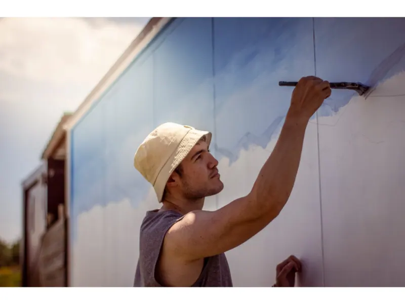
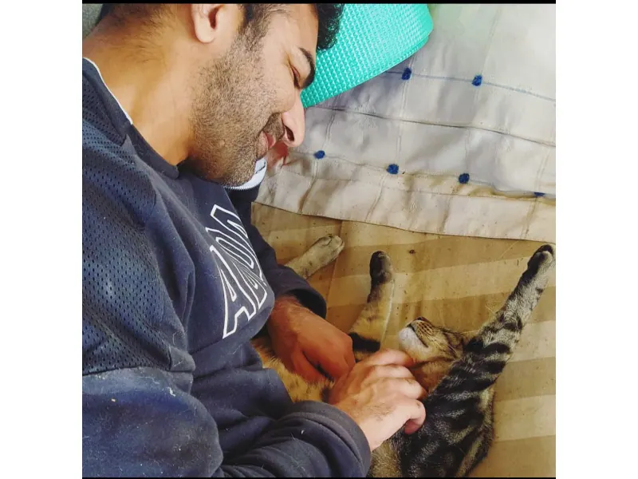

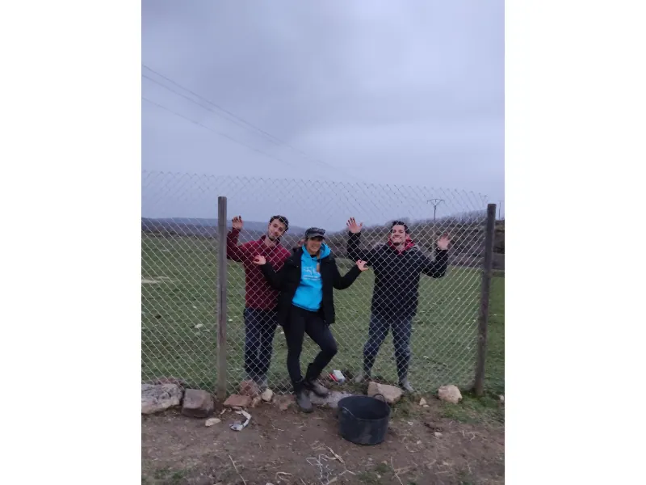
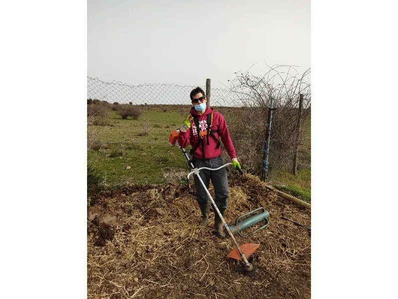
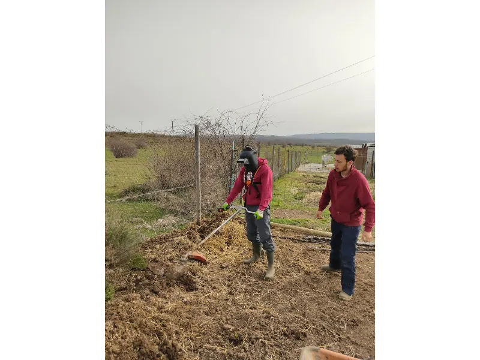
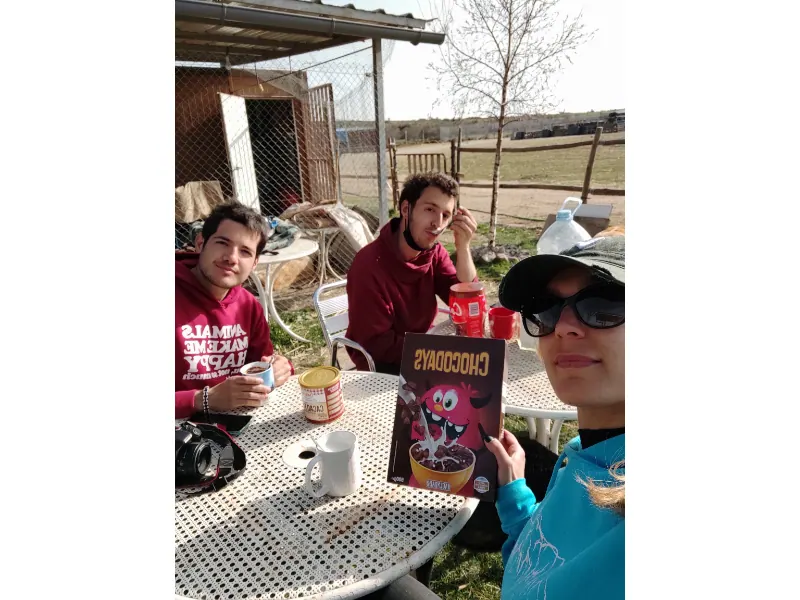
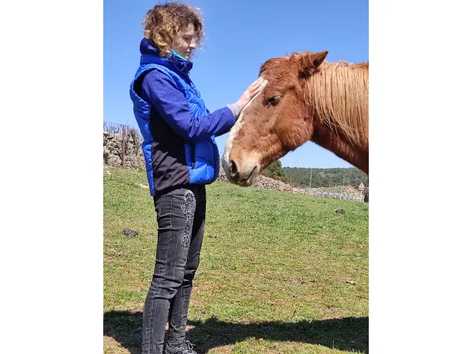

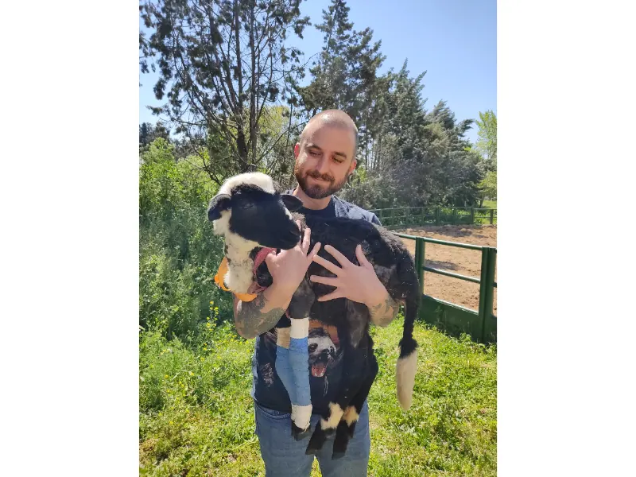
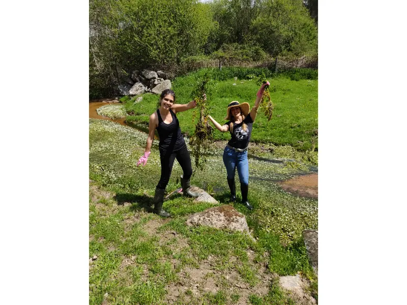
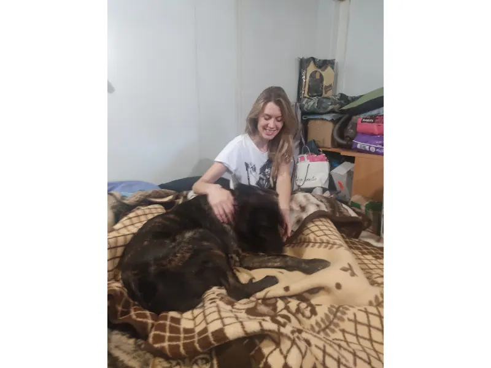
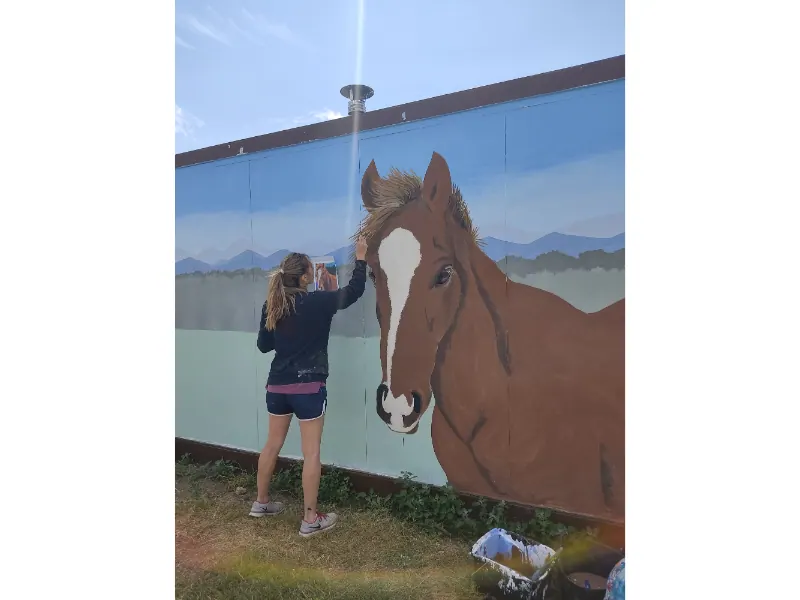
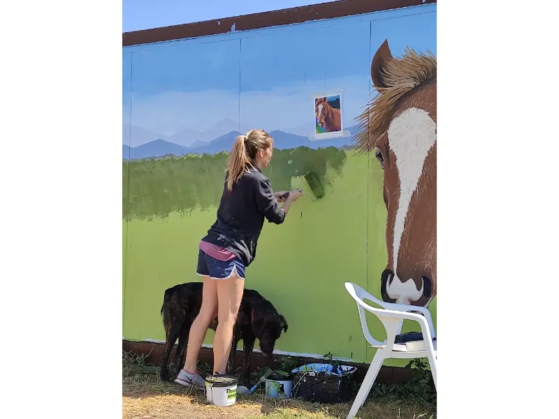
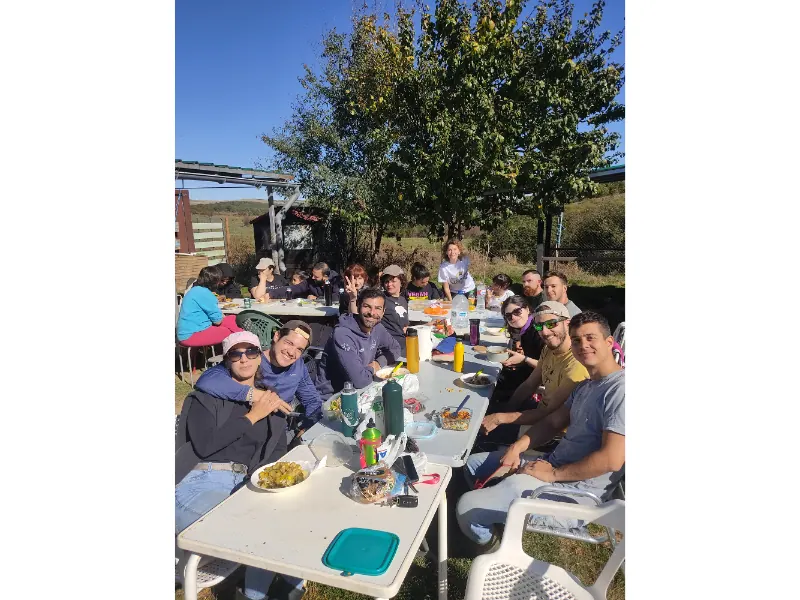
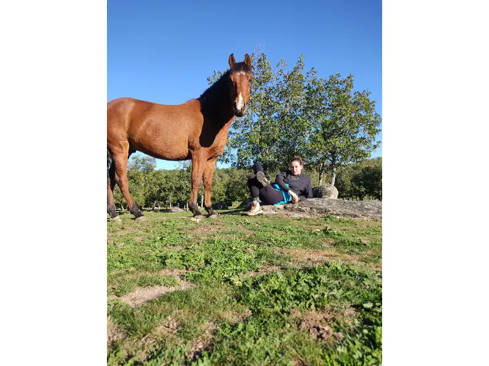
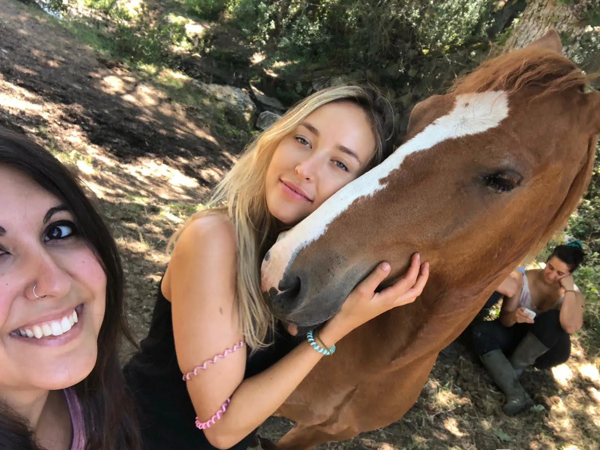
Da el primer paso
También puedes escribir por WhatsApp al 690 14 39 20 si necesitas resolver cualquier duda.